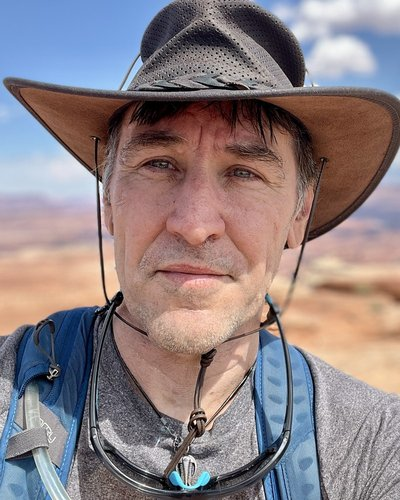

Independent, Arlington, VA, USA

Theories of mind disagree about what consciousness is made of, where it resides, and how it relates to the physical world. But many of their disagreements rest on more fundamental commitments concerning the relationship between private experience and public observation. Proximity Vitalism (PV) examines three such commitments: Experience Exists (EE)—private, subjective experience occurs; the Public Domain Exists (PE)—experiences have anchors in a shared, publicly observable world; and the Proximity Principle (PP)—differences in experience imply differences in their public anchors. PV is deliberately agnostic about ontology. Rather than explaining what experience is made of, it investigates the structural consequences of accepting these commitments. The framework exposes fault lines both between and within the four major theories of mind: Dualism, Physicalism, Idealism, and Panpsychism. It also reframes classic puzzles, including the Knowledge Argument, philosophical zombies, and the Inverted Spectrum, as disputes over commitments rather than mysteries requiring additional metaphysical machinery. Additionally, an unstated assumption is exposed: the Exclusion Assumption (EA). EA forbids publicly observable elements from participating in multiple experiential anchors. PV does not require this assumption. Its rejection—the Non-Exclusion Principle (NE)—challenges assumptions underlying the Combination, Decombination, and Binding Problems without requiring experiences themselves to combine.
Dr. Scott James holds a PhD in Applied Mathematics from the University of Maryland and is a Technology Fellow in simulation and modeling.
His work spans autonomous systems, large-scale network simulation, genomics, and aerospace — with a career focus on the modeling, simulation, and visualization of complex systems.
His philosophical work develops structural frameworks for the theory of mind. Geometric Vitalism, introduced here, proposes that experience is located by the joint specification of a public domain and a minimal non-public dimension — dissolving several long-standing puzzles without adding metaphysical machinery.